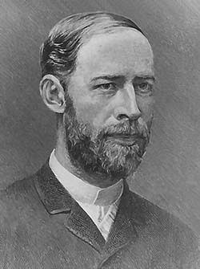
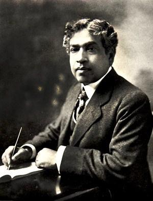

História
A história das micro-ondas começou no século XIX, com os estudos sobre eletricidade e magnetismo. Em 1864, James Clerk Maxwell desenvolveu uma teoria sobre a existência das ondas eletromagnéticas. Anos depois, Heinrich Hertz comprovou experimentalmente essa existência. Durante a Segunda Guerra Mundial, as micro-ondas ganharam destaque no desenvolvimento de radares. Com o passar dos anos, passaram a ser utilizadas em telecomunicações, satélites, radares e no aquecimento de alimentos.
Cientista e biografia
-
 James Clerk Maxwell (1831–1879)
James Clerk Maxwell (1831–1879)Foi um físico e matemático escocês. Desenvolveu a teoria do eletromagnetismo e previu matematicamente a existência das ondas eletromagnéticas, incluindo as micro-ondas. Suas descobertas foram fundamentais para a Física moderna.
-

Heinrich Hertz (1857–1894)Foi um físico alemão que comprovou experimentalmente a existência das ondas eletromagnéticas previstas por Maxwell, em 1887. Suas pesquisas contribuíram para o desenvolvimento do rádio e das comunicações sem fio.
-

Jagadish Chandra Bose (1858–1937)Foi um físico e inventor indiano. Entre 1894 e 1895, realizou experiências pioneiras com micro-ondas, demonstrando sua transmissão sem fios. Suas pesquisas contribuíram para o avanço dos estudos sobre essas ondas.
Características
- Tipo da onda:
Eletromagnéticas;
- Faixa de frequência:
Aproximadamente 300 MHz a 300 GHz;
- Comprimento de onda:
Aproximadamente 1 mm a 1 m;
- Propagação:
Não precisam de meio material, podendo se propagar no vácuo.
Aplicação tecnológica
As micro-ondas são ondas eletromagnéticas principalmente utilizadas em aparelhos como o forno de micro-ondas. Seu funcionamento acontece por meio da emissão de ondas que interagem com as moléculas de água presentes nos alimentos, fazendo com que elas se movimentem rapidamente e produzam calor. Dessa forma, os alimentos conseguem ser aquecidos ou descongelados em poucos minutos. Além dos fornos, as micro-ondas também são utilizadas em radares, sistemas de comunicação por satélite e transmissão de dados. Nos radares, por exemplo, elas ajudam a identificar a localização e a distância de objetos, sendo importantes para a previsão do tempo e para o controle do tráfego aéreo.
Aplicações na saúde/medicina
As micro-ondas possuem diversas aplicações na medicina e na saúde, contribuindo para o diagnóstico e tratamento de doenças. Desde a década de 1980, são utilizadas em tratamentos contra o câncer, por meio da técnica de ablação, que destrói tecidos doentes. Atualmente, também são estudadas para a criação de imagens médicas e identificação de alterações no organismo. Com o auxílio da inteligência artificial, essas tecnologias podem tornar os diagnósticos mais precisos, melhorar os tratamentos e tornar o atendimento médico mais eficiente.